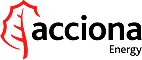
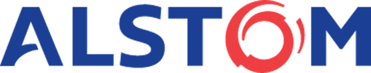
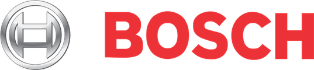
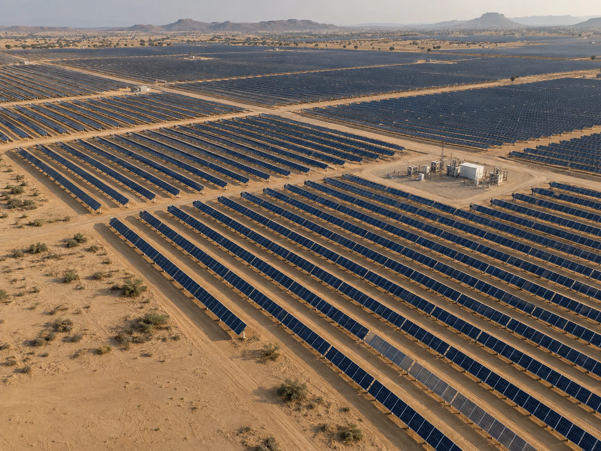
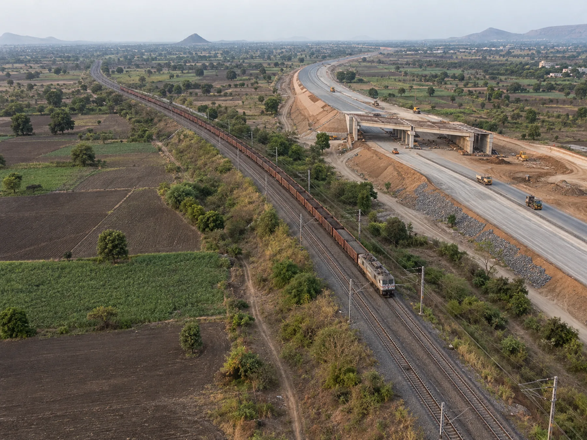
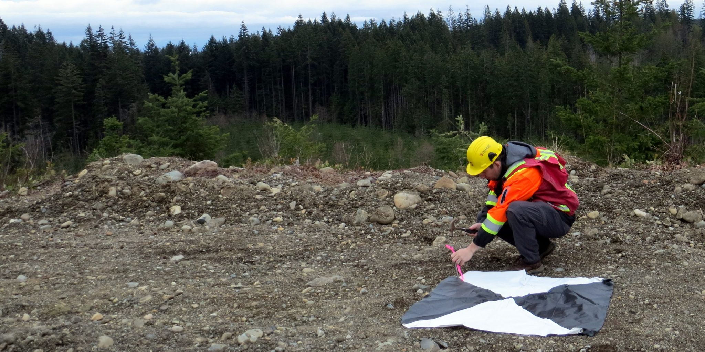

01 · Speed
Get site insights sooner.
Turn each flight into decision-ready intelligence.

Physical world intelligence, delivered
Autonomous aerial intelligence for enterprises building and operating at scale.
LiveAerial intelligence in motion
Trusted by teams managing critical infrastructure






Across every asset
Aerial intelligence brings progress, condition and change across complex assets into a view teams can act on.






Operational clarity
Turn each flight into decision-ready intelligence.
Connect repeatable missions to one clear workflow.
Surface change early and reduce avoidable rework.
Maintain a traceable visual record across every site.
Limit exposure while keeping teams informed.
Built for your site
We connect site context, field capture and operational insight into one approach your team can scale.
Define the site, constraints and decisions that matter.
Move evidence from the field into one repeatable flow.
Learn quickly, refine the approach and prove what works.
Extend a proven operating model across teams and sites.
How Skylark works: Workflow
Automated, repeatable drone capture keeps current site evidence flowing from the field.
 Connected product view
Connected product viewIndustry solutions
Solar
Assess terrain, verify construction progress, track loose inventory and locate module-level anomalies for maintenance.
Customer success
Partnering with Skylark on our solar projects was seamless. From design to commissioning, their professionalism, quality, and timely execution stood out. Their proactive planning and stakeholder coordination ensured smooth execution and excellent results.
Skylark helped us build one of India’s fastest solar plants. Autonomous inspections caught faults before they cost us generation, reduced downtime, lowered OpEx, and increased overall output.
Skylark Drones transformed how we managed our 750 MW project, reducing our build time by half. Aerial intelligence helped us monitor progress, improve safety oversight, and accelerate construction. It’s now a core part of our workflow across multiple sites.
Resources & insights
How stationed drone systems connect recurring site capture with construction monitoring and project governance.

Why the time between inspection and actionable insight matters for maintenance decisions and asset performance.

A practical guide to using ground control points to improve drone survey accuracy.
Start a conversation
Tell us about your site, operations, or inspection requirements.